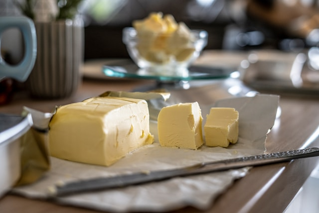

| 150 g bitter çikolata |
|
150 g bitter çikolatayı benmari usulü eritin. |
| 100 g tereyağı |
 |
Eritilmiş çikolataya 100 g tereyağı ekleyin ve karıştırın. |
| 3 adet yumurta |
 |
3 adet yumurtayı ve 50 g şekeri çırpın, ardından çikolatalı karışıma ekleyin. |
| 50 g un |
|
50 g unu karışıma ekleyin ve pürüzsüz olana kadar karıştırın. |
| Bir tutam tuz |
|
Bir tutam tuz ekleyin, karıştırın ve sufle kaplarına dökün. |
| Fırında pişirme |
Önceden ısıtılmış 200°C fırında 12-15 dakika pişirin. |
| Servis |
Sıcak servis yapın, isteğe göre üzerine pudra şekeri serpin. |